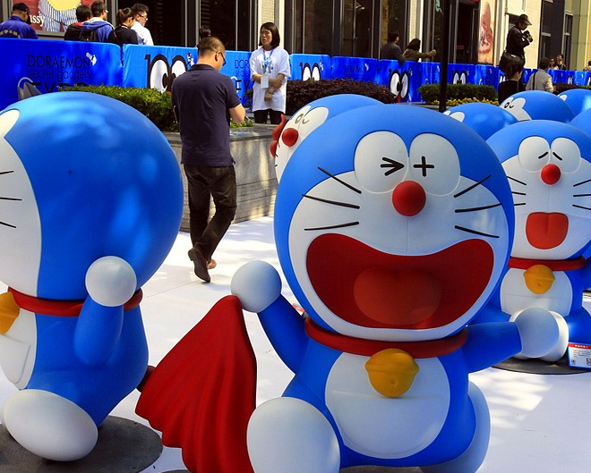

小叮当帮我实现愿
已阅读 500次
哆啦A梦是一只来自未来世界的猫型机器人，用自己神奇的百宝袋和各种奇妙的道具帮助大雄解决各种困难。哆啦A梦的故事将人们带进一个奇妙、充满想像力的世界。也正因此，它能作为一个常青的形象，伴随几代少年儿童的成长。
小叮当帮我实现愿望哆啦A梦是一只来自未来世界的猫型机器人，用自己神奇的百宝袋和各种奇妙的道具帮助大雄解决各种困难。哆啦A梦的故事将人们带进一个奇妙、充满想像力的世界。也正因此，它能作为一个常青的形象，伴随几代少年儿童的成长。
小叮当帮我实现愿望哆啦A梦是一只来自未来世界的猫型机器人，用自己神奇的百宝袋和各种奇妙的道具帮助大雄解决各种困难。哆啦A梦的故事将人们带进一个奇妙、充满想像力的世界。也正因此，它能作为一个常青的形象，伴随几代少年儿童的成长。